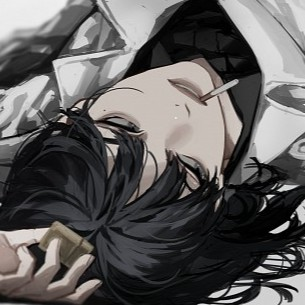
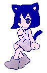

happy holidays! i am procrastinating. if i procrastinate hard enough, maybe i'll finally fix the microblog pagination and open coding commissions. it's all about believing in yourself.

This is my personal site and a place for me to share my work. It is perpetually in-progress, so please excuse anything unfinished.RSS feed responsive
Pick an emoji to change the theme. You may need to tap it twice for the grid to refresh correctly.
Grab a card by its header and drag it wherever you want!
Which theme is your favorite?
PLAYLIST

Read the rest of the blog here.